The drummer.
Solo drummer from Guwahati, Assam, India, playing in the heavy metal scene for the past 20 years.
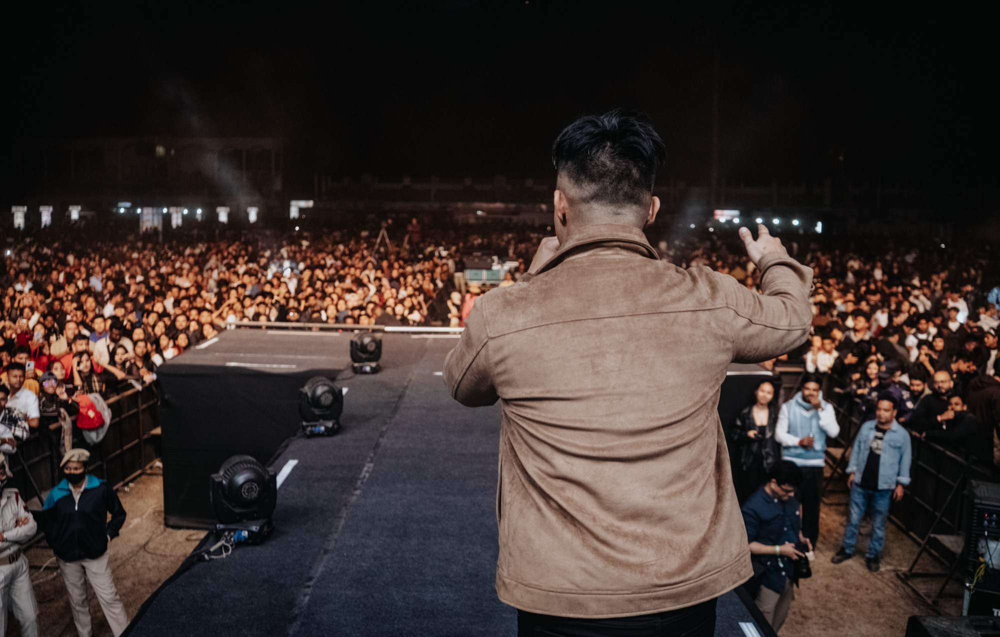
About
Nishant Hagjer has been drumming, especially in the heavy metal scene, for the past 20 years. He is a versatile musician, playing a wide range of genres and instruments.
His biggest stints are listed below, from Download Festival and Bloodstock in the UK to a 29-show run across 10 European countries in 2022.
He learned the drums from the drummer of Papon in 2006, and had the privilege of learning from Benny Greb in 2011 at Swarnabhoomi Academy of Music. In 2011 he also rehearsed, planned and practised with the harmonica player of the legendary act Sting.
He is a Paiste artist, and is also a drum teacher and clinician, with sold-out workshops in Guwahati, Delhi and Kathmandu.
“I didn’t and don’t follow any musical formulas or algorithms, this is just pure music and words from my heart.”
Career highlights
The ones that put him on the map.
- SystemHouse33 across Europe, March–April 2022.29 shows in 33 days in 10 countries, sharing the stage with female metal giants Nervosa (Brazil) and Burning Witches (Switzerland).
- Download Festival 2019 (UK), with Underside.On a bill with Slipknot, Dream Theater, Slash, Def Leppard, Whitesnake, Tool, Lamb of God and more.
- Europe tour 2019, with Underside.18 shows, touring with Shrezzers (Russia) and Betraying The Martyrs (France).
- UK tour 2019, with Underside.20 shows in 20 days across the whole of the UK, sharing the stage with Bleed From Within (UK) and Cancer Bats (Canada).
- On stage with Chris Adler (ex Lamb of God).At Purple Haze, the biggest club in Kathmandu.
- Nepal and UK tour, 2018.With Underside, with Mohini Dey as their bassist.
- Whitechapel (USA), O2 Islington, London, 2019.Shared the stage after performing at Download Festival.
- Bloodstock Festival 2018 (UK), with Underside.Sharing the bill with Judas Priest, Gojira and more.
- Underside’s headline tour of New Zealand and Australia.3 shows in New Zealand, touring with Twelve Foot Ninja, and 4 shows in Australia, including a sold-out show in Sydney.
- One month in Vietnam, 2016.9 shows on tour with New York rappers New Fame.
- “Bleed” by Meshuggah, 2014.His drum performance video of the track on YouTube.
- NH7 Weekender.2012, 2013, 2014, 2015 and 2016 with Undying Inc, and 2019 (Pune) with Underside.
- “Xeema” music video.With M-Sonic, India’s Got Talent runners-up, about the seven sister states of North East India.
- “Metal for Nepal”.Organised and performed with Underside to raise funds for victims of the 2015 Nepal earthquake, and built 300 houses in rural Nepal.
- Kolkata Metal Fest, 2018.Performed with Undying Inc to raise funds for the Kerala flood victims.
- Soul Inclination, 2017.Performed at Hauz Khas Village (Garage), Delhi, to collect clothes and donations for the Assam flood victims.
- Red Bull Tour Bus, 2014.9 days across North and North-East India with Undying Inc, the longest Red Bull tour in India.
- “Gadhimai”, 2019.Underside’s music video passed 1 million views and went to YouTube Trending.
- Mumbai Drum Day, 2018.Part of the line-up.
Portraits & stage
Behind the kit.
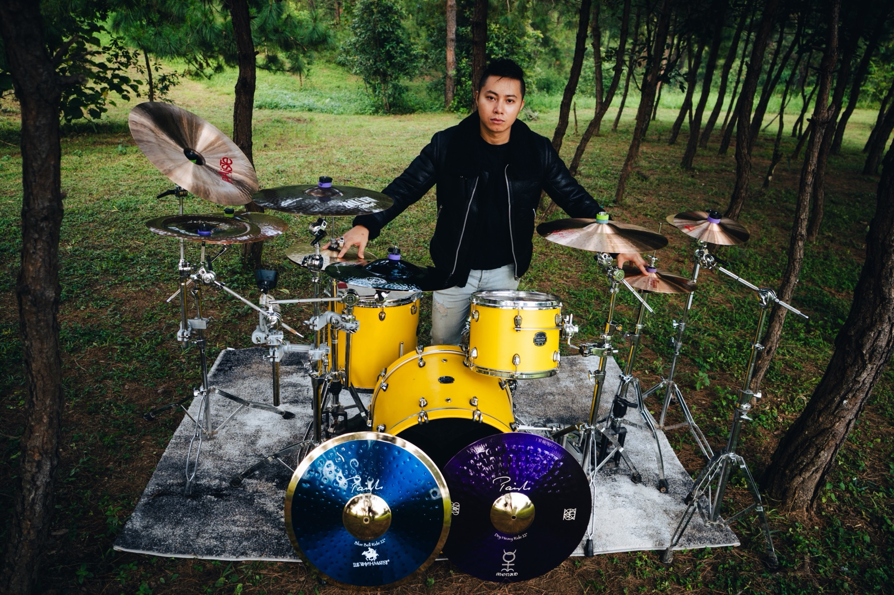
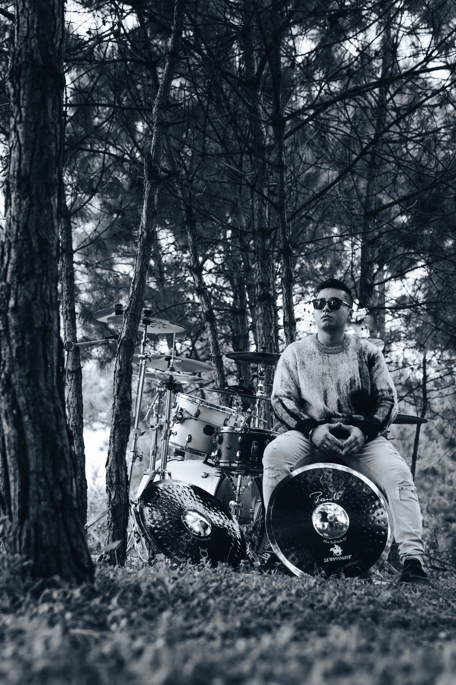
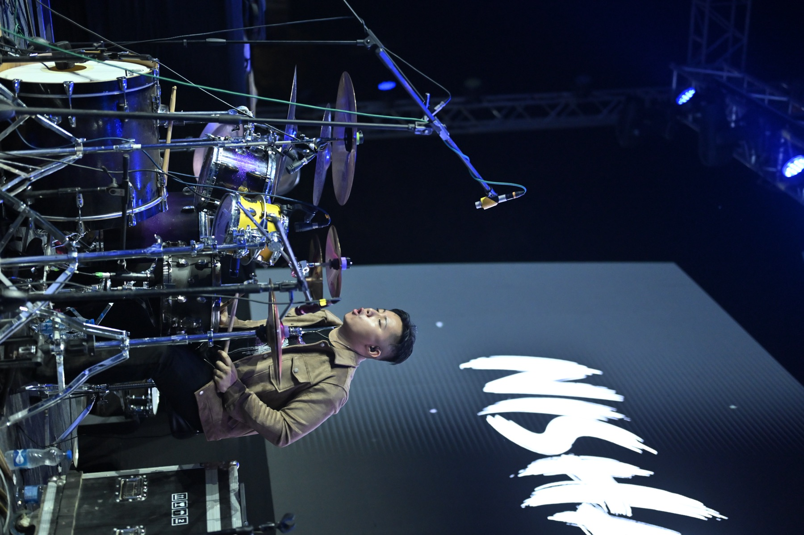
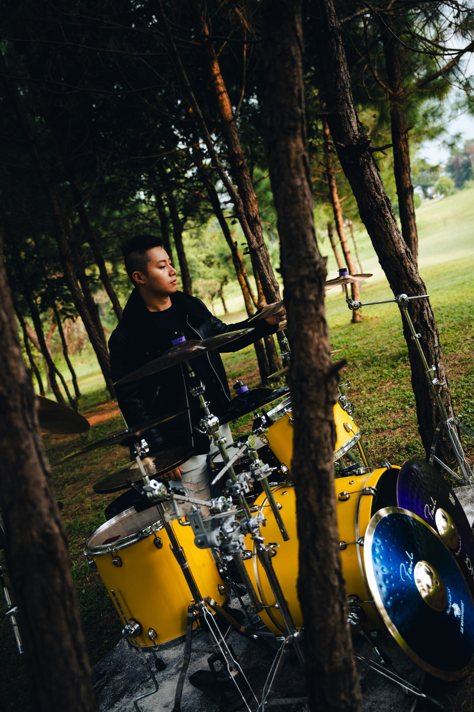
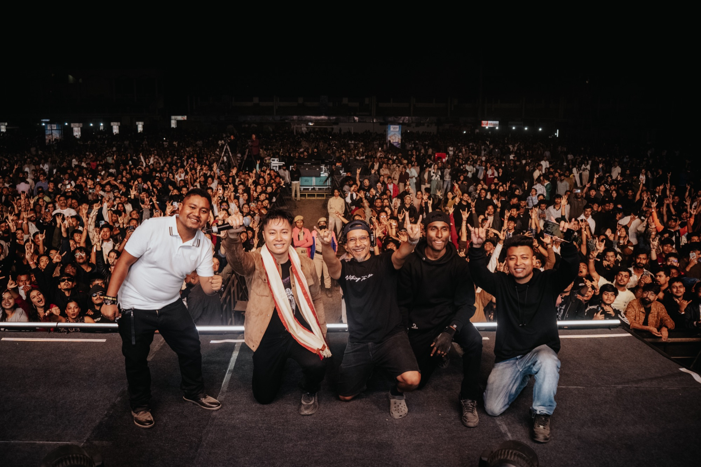
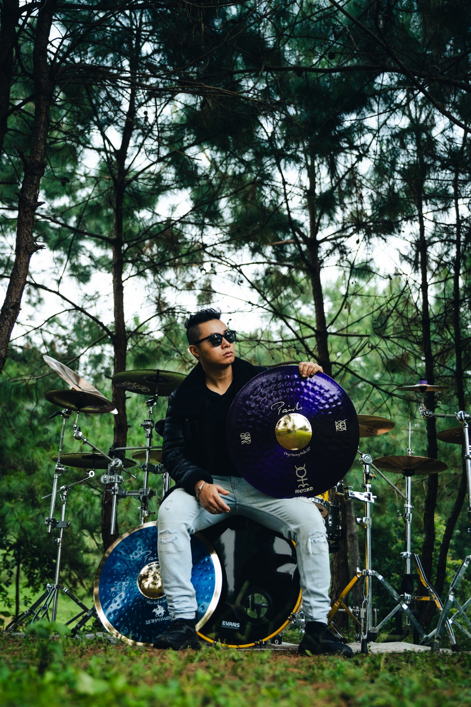
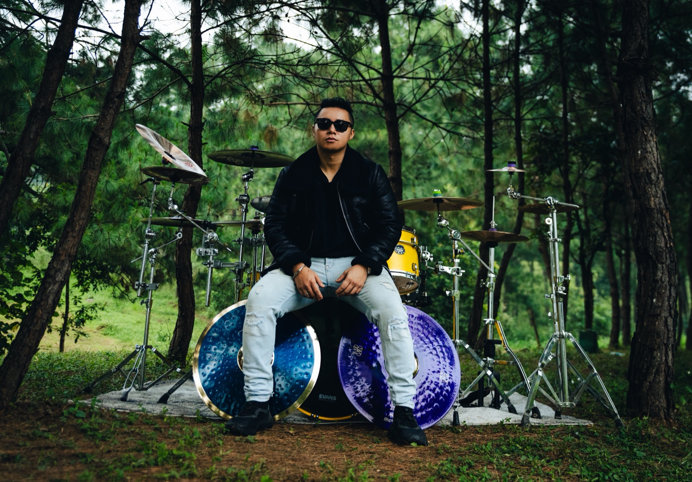
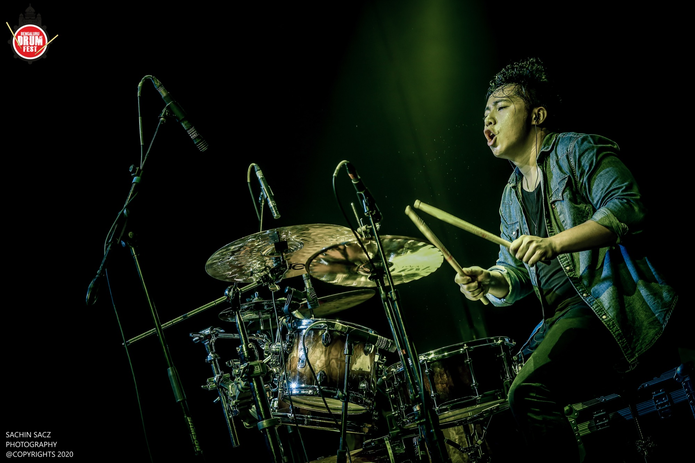
Photos
On the road.
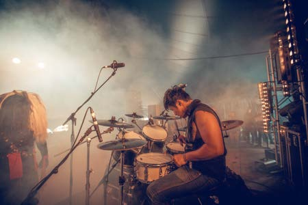
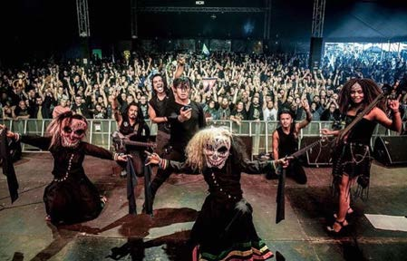
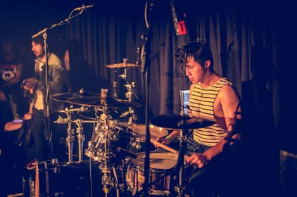
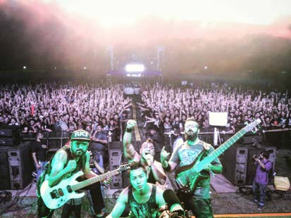
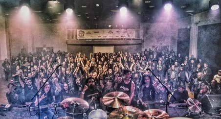
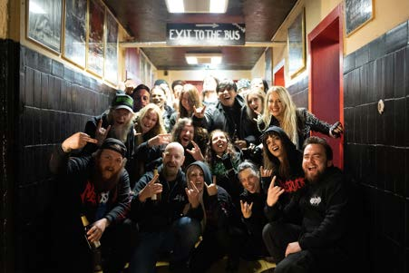
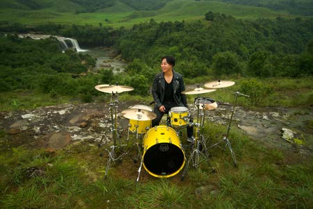
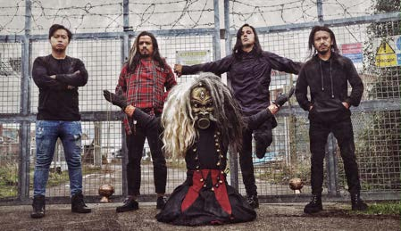
Teaching
Teacher & clinician.
Sold-out workshops in Guwahati, Delhi and Kathmandu.
He has taught over 120 students one-on-one in Delhi, 70+ in Kathmandu and almost 200 in Guwahati. He also teaches over Skype, mainly students from outside North-East India.
His drum lessons are heavily equipped with very personal experiences and stories, and act as a therapeutic session for all his students.
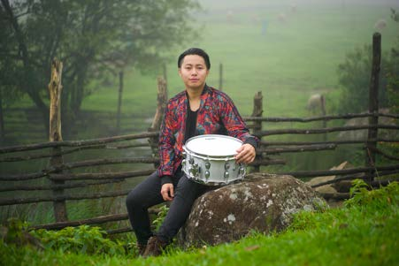
Cymbal setup
What he plays
As listed by Paiste, left to right:
- 18″ Alpha Medium Crash
- 14″ 2002 Heavy Hi-Hat
- 10″ Black Alpha JJ Hyper Splash on 12″ 900 Color Sound Blue Splash (stack)
- 18″ 2002 Wild Crash
- 18″ 2002 Giga Bell Ride “Psychoctopus”
- 18″ 2002 Power Crash
- 18″ 2002 Novo China
Endorsements
Who backs him
- Paiste cymbals
- Mapex drums
- Audix microphones
- Axis Percussion
- SlapKlatz Moon Gels
- Evans drumheads
- Promark drumsticks
- Hype String cajons
- Vratim drumming shoes
- Roland V-Drums
Find him
Online
Sources
- Nishant Hagjer Artist Profile
- Paiste artist profile
- Rolling Stone India (2023)
- YouTube channel